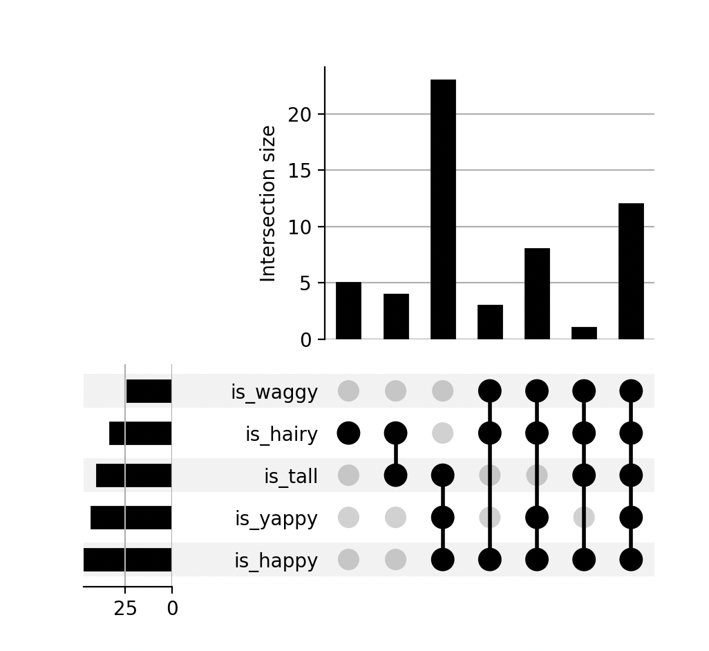

⇦
⇦
2024-10-17
UpSet plots are not widely known and are useful for understanding the intersections of categorised data - think of them as Venn diagrams on steroids. Let's go straight to an example:
Say we have a load of information about dogs in the form of flags (is_happy, is_yappy, etc). Let's select out all of the data and aggregate:
SELECT
is_happy,
is_yappy,
is_hairy,
is_waggy,
is_tall,
count(*) AS c
FROM (
SELECT
id,
is_happy,
coalesce(is_yappy, FALSE),
coalesce(is_hairy, FALSE),
coalesce(is_waggy, FALSE),
coalesce(is_tall, FALSE)
FROM happy_table
LEFT JOIN yappy_table USING (id)
...
)
GROUP BY
is_happy,
is_yappy,
is_hairy,
is_waggy,
is_tall
Note that the count in each row is a distinct set of dogs from the count in every other row.
is_happy is_yappy is_hairy is_waggy is_tall count
TRUE FALSE TRUE FALSE TRUE 12
FALSE FALSE TRUE FALSE TRUE 7
...
Now some setup:
pip install upsetplot pandas
And the Python to make the plot:
import io
import pandas as pd
import upsetplot
from matplotlib import pyplot as plt
TSV = """
is_happy is_yappy is_hairy is_waggy is_tall count
TRUE TRUE TRUE TRUE TRUE 12
TRUE TRUE TRUE TRUE FALSE 8
TRUE TRUE FALSE FALSE TRUE 23
TRUE FALSE TRUE TRUE TRUE 1
TRUE FALSE TRUE TRUE FALSE 3
FALSE FALSE TRUE FALSE TRUE 4
FALSE FALSE TRUE FALSE FALSE 5
"""
df = pd.read_csv(io.StringIO(TSV), sep="\t")
flags = [c for c in df.columns if c != "count"]
df = df.set_index(flags)
df = df.groupby(flags).sum()
upsetplot.plot(df["count"])
plt.show()
The plot:

So, unhappy dogs are largely hairy and tall, there are a lot of tall yappy dogs, etc.
Old version of this post munging data from a different format.